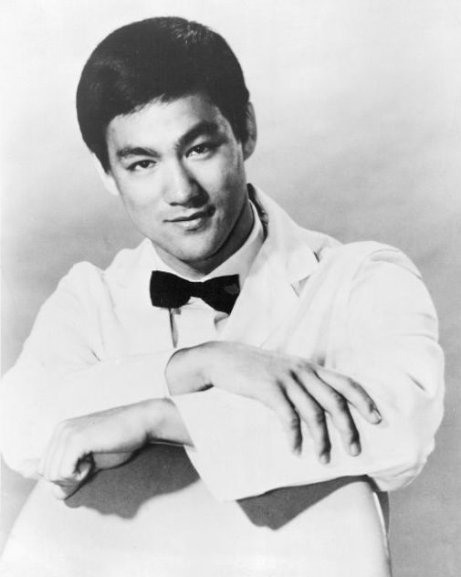

No Way as Way
Be water, my friend — and water, struck, strikes back.

No Way as Way
Be water, my friend — and water, struck, strikes back.
Feature map
Level-by-level features, as the figure refined them.
The Intercepting Fist
Stop-Hit — Reaction · 1 CE · Water's Duty — Reaction · 1 CE.
Tier III · Striker (Counter) · Suggested CE ability: WIS · Primary verb: Intercept. Technique DC = 8 + proficiency bonus + WIS modifier. His unarmed strikes count as technique expressions for all features below.
- Stop-Hit (Reaction, 1 CE): when a creature hits you with a melee attack, reduce the damage by 1d10 + your WIS modifier + your proficiency bonus. The attacker then takes force damage equal to your WIS modifier + your proficiency bonus as your answer arrives along the channel of their strike. You don't block the punch. You complete it into your fist. - Water's Duty (Reaction, 1 CE): when an ally within 10 ft of you is targeted by an attack, you may move up to 10 ft (this movement does not provoke opportunity attacks) and become the target instead. Stop-Hit may then be applied to the intercepted attack. A willing ally may always be intercepted; an unwilling one cannot.
Be Water
Flowing Guard — Passive · The Intercepting Fist — Reaction · 2 CE.
- Flowing Guard (passive): while you have at least 1 CE remaining, opportunity attacks against you have disadvantage, and your Stop-Hit reduction increases by an additional 1d10. - The Intercepting Fist (Reaction, 2 CE): when a creature within your reach casts a spell or activates a technique feature with an observable component (words, gestures, stance, CE flare), you may make an unarmed strike against it. On a hit, the target must succeed on a CON save vs your DC or the activation is disrupted — the action is wasted and half the CE spent is lost. He doesn't react to the technique. He reacts to the intention of the technique.
No Limitation as Limitation
The Returned Blow — Reaction · 3 CE · One-Inch Punch — Action · 4 CE.
- The Returned Blow (Reaction, 3 CE): when your Stop-Hit reduces an attack's damage to 0, you may immediately make an unarmed strike against the attacker as part of the same reaction. - One-Inch Punch (Action, 4 CE): melee technique attack. On hit: 3d8 + WIS force damage, the target is pushed 15 ft, and if it is Large or smaller it must succeed on a STR save vs your DC or be knocked prone. The famous inch — all of Jeet Kune Do's compression theory in a single expression.
Enter the Dragon
Dragon's Answer — Bonus action · 6 CE.
- Dragon's Answer (Bonus Action, 6 CE, 1 minute): your unarmed strikes deal an additional 1d8 force damage; your speed increases by 10 ft; and your Stop-Hit may now trigger against ranged weapon attacks as well ("catching the arrow" — the water answers everything thrown into it). - Your Stop-Hit reduction increases by a further 1d10 (total 3d10 + WIS + PB at this level).
The Dojo Floor (Simple Domain) Simple Domain
Simple Domain — Action · 5 CE · No Way as Way — Passive.
- Simple Domain: The Dojo Floor (Action, 5 CE, 1 minute): a 15-ft-radius circle centered on you — the refined simple domain, the mat where all exchanges are honest. Inside the circle, sure-hit effects are neutralized (the simple domain's canonical function), and your Stop-Hit costs 0 CE while you remain inside. The circle moves with you. It does not clash with true Domains — against a Domain Expansion, it merely gives you somewhere to stand; resolve the clash normally, and if you lose, the circle collapses. - No Way as Way (the namesake, passive): once per round, when you use Stop-Hit, you may return the full amount reduced as force damage to the attacker, instead of the flat WIS + PB. The complete answer, for one exchange per round.
Maximum, Domain, or equivalent.
Capstone material.
The Art Is Complete (Capstone)
- The Final Draft (Reaction, 10 CE, once per long rest): when an attack would reduce you to 0 hit points, you intercept it perfectly — you take no damage, and you immediately make one unarmed strike against the attacker with advantage. On a hit: 10d10 force damage, and the target must succeed on a CON save vs your DC or be stunned until the end of your next turn. - The price of completion: after using The Final Draft, Bruce Lee understands — truly, finally — that the art is complete. And a completed art needs no artist. Within the arc, he begins to fade: his vessel's body weakens (one level of exhaustion that cannot be removed), his appearances grow shorter, and at the arc's end he bows, closes the notebook, and is gone. He won the search. The search was the only thing keeping him here.
Build-defining options.
This technique grants Innate Technique Feats — hand-authored applications of the figure's art, available in the builder's feat picker when you select this technique.